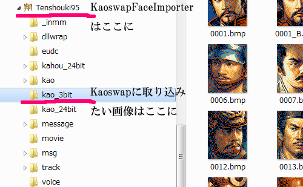
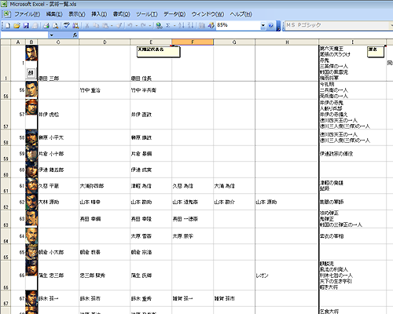

多数の減色済みの顔グラフィックを一括でkaoswap.n6pへと取り込めるツールの提供、
及び、使用方法の解説となります。
このツールは、0001.bmp～1332.bmpなど連番となっている８色の顔グラを、Kaoswap.n6pへと取り込むツールです。
このツールの｢KaoSwapFaceImporter.exe｣自体は、天翔記フォルダに置き、ご自分で用意した、Kaoswapへと取り込みたい顔画像(８色の連番画像)は｢kao_3bit｣というディレクトリに起きます。

・Kaoswap.n6pへと取り込みたい顔画像は｢kao_3bit｣ディレクトリに置く。
・KaoSwapFaceImporterを実行する
(※顔画像は0001.bmp～1332.bmp)
主に起きるのは２つのエラーです。エラーが起きるとエラーを表示した状態で止まります。
このツールをちゃんと使うには、このツールが行うことを正しく理解する必要があります。
(※このツールの実行速度はとても速く、一瞬黒い窓が出るだけで全ての処理が終わります。
ある程度のPCであれば、0.5～2秒ほどの間に2000個程度の顔画像の取り込みを完了してしまいますので、途中経過は目視して判断することは出来ません。)
以上です。
全ての連番ファイルがそろっている必要はありません。
番号が歯抜けになっていても大丈夫ですし、
たった１つだけの顔画像(例:0003.bmpだけ)などがあってもＯＫです。
kao_3bitフォルダ内にある｢xxxx.bmp｣という命名規則に沿った画像は全てKaoswapへの取り込み対象となります。
実は｢武将一覧.xls｣にこれをサポートする機能が実装されています。
｢武将一覧.xls｣を｢kao_3bit｣フォルダに置き、武将一覧.xlsを立ち上げて｢顔｣ボタンを押すと
0001.bmp～ の画像をExcel上にインポートする機能が備わっています。
(kao_24bitフォルダに置けば、そちらが対象となります。とにかく連番の顔画像ファイルがあれば良いだけです)
(※Excelのマクロが有効でないと機能しないので、マクロを有効にして下さい。
マクロを有効にするやり方はネットで検索して調べて下さい)

このツールはKaoswapEX.n6pのファイルを発見すると、
Kaoswap.n6pに引き続き、KaoswapEX.n6pに対しても同様の処理を行います。
即ち、
KaoswapUX.N6Pにも対応しています。考え方や対応状況はKaoswapEx.N6Pと同じです。
この場合、「xxxx.bmp｣とは0001.bmp～2932.bmpまでが対象となります。
・KaoswapExMakerは、Kaoswap.n6pの内容を引き継いで、KaoswapEX.n6pを作成するツールです。
・KaoswapFaceImporeterは、あくまでも用意された顔画像の取り込みを自動化するツールです。